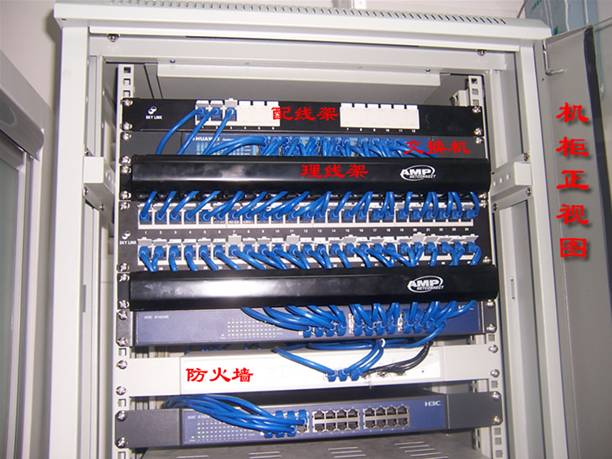
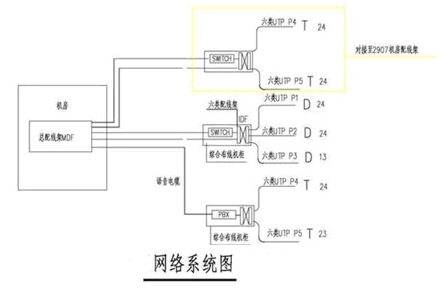
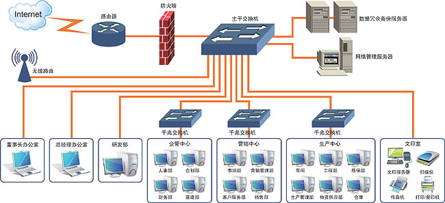
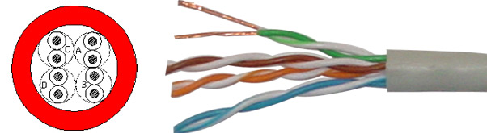
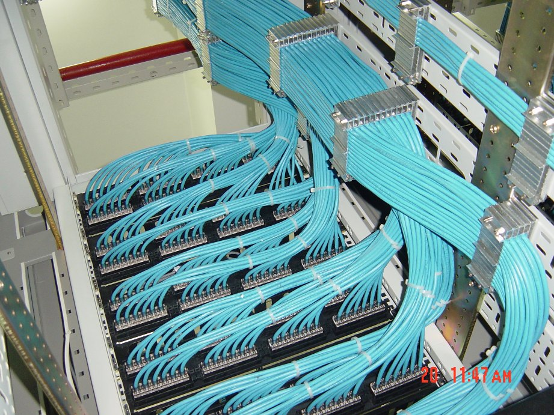
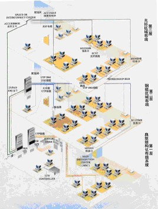

服务项目

- 网络系统工程业务介绍
-
- 01.技术咨询服务。
- 02.网络方案设计服务 。
- 03.项目实施服务。
- 04.系统维护服务。
- 05.系统性能优化服务。
- 06.系统升级改造服务 。

- 网络系统图
-
据不完全统计，90%以上新装修的公司只在乎装修的整体布局，视觉效果。往往忽略一些弱电系统，没有很好的整体规划，施工时不一定是专业的人员做工，您也没有很好的监管，基本上都有后期的隐患。弱电是您看不到的，材料、设备的选配。做工是不是每个环节都做到位。不是当时通能上网就好了，网络的速度稳定、频繁的数据交换是否有保障，对您今后的使用都非常关键。还有网络、电话、门禁考勤、闭控监控、视频会议等合理的搭配，怎样才是符合贵公司最佳的解决方案。因现在是网络时代，电脑、电话一个都不能少，正是这些被忽略的部份，稳定、好用才会真真为企业创造更好的环境，更大的收益。需求分析
网络系统的建立是为了使公司享有信息时代最新网络技术、通讯技术、控制技术成果所带来的种种便利而规划的。办公区综合布线系统支持计算机网络系统和电话语音系统以及两系统的互换。建立一套投资合理、高效、先进的开放型布线系统；
满足语音、数据、图像、多媒体信息大容量、高速传输的要求；可靠性和安全性作为布线系统设计的重要原则； 考虑到桌面应用向100BASE－TX以及进一步向ATM到桌面的升级潜力，水平传输通道必须支持100Mbps 数据传输率

- 系统结构
- 根据业主的具体情况，我们建议采用以下方案：采用集中结构，整个新办公区的所有双绞线布放至机房机柜中，双绞线直接端接在机柜内的模块化配线架上；桌面也做好模块及面板，并标上标签，以便检测和后期维护。

- 材料选型
- 根据用户的需求，选择AMP或SYSTIMAX公司的布线产品作为我们系统的主选材料。面板采用86式面板，满足国标86底盒标准要求，与强电系统底盒及面板相同，外观上整齐美观。布线标准选用超五类或六类产品，每个工作位是一个双孔插座：一个电脑插座，一个电话插座(个别工作站设双语音插口)。机柜端采用相同品牌24口或48口模块式配线架。电话与电脑可任意互换。

- 布线系统管槽设计管线铺设建议：
-
由于安装的是非屏蔽双绞线，对接地要求不高，建议在与机柜相连的主线槽处接地。本区域需要线槽的规格是这样来确定的：线槽的横截面积留40%的富余量以备扩充, 超五类双绞线的横截面积为0.3平方厘米。线槽安装时,应注意与强电线槽的隔离。布线系统应避免与强电线路在无屏蔽、距离小于20cm情况下平行走3米以上。如果无法避免，该段线槽需采取屏蔽隔离措施。进入家具的电缆管线由最近的吊顶线槽沿隔墙下到地面，并从地面镗槽埋管到家具隔断下。管槽过渡、接口不应该有毛刺，线槽过渡要平滑。 线管超过两个弯头必须留分线盒。> 墙装底盒安装应该距地面30厘米以上，并与其他底盒保持等高、平行。 线管采用镀锌薄壁钢管或PVC管。
我们设计思路就是按照办公室综合布线系统的标准进行实施，这样管理维护方便，系统设计有一定超前性，考虑今后未来的长久实用性。

- 办公室综合布线网络的实施标准
-
1、办公室布线的需求：
办公室布线的信息插座作为布线系统的水平子系统一部分，不管企业的办公应用如何变化，办公室综合布线需要满足我们以下要求。 对电话的要求：利用电话交换机，将企业与外界有效地联系起来，同时方便内部通话。
对电脑网络的要求：综合布线采用星形结构，能支持现在及今后的网络应用——10Mb以太网、 100Mb快速以太网、1000Mb千兆位以太网。
对图像传输方面的需求：模拟图像、数字图像、会议电视等。
现代化的办公环境，通讯时刻要保证稳定可靠在新大楼修建前，在新大楼修建中，在旧楼改造时，在企业需迁新址时；在公司电话、电脑应用增加，而尚未采用综合布线时；在企业以往的布线系统不能满足需求时。所以我们都要谨慎考虑布线系统
2、信息插座的安装位置：
对于办公楼环境而言，办公空间有大开间，也有四壁的小房间。对这两种形式下的工作区子系统的面板安装采用不同的安装方法。小房间不需要分隔板，信息插座只需安装于墙上；对于大开间而言，选用以下两种形式的安装方法：
1）信息插座安装于地面上
要求安装于地面的金属底盒应当是密封的、防水、防尘并可带有升降的功能。此方法对于设计安装造价较高。并且由于事先无法预知工作人员的办公位置，因此灵活性不是很好，建议根据房间的功能用途确定位置后，作好预埋，但不适宜大量使用以免影响美观。
2）信息插座安装于墙上
此方法在分隔板位置未确定情况下，可沿大开间四周的墙面每隔一定距离均匀地安装RJ45埋入式插座。RJ45埋入式信息插座与其旁边电源插座应保持20cm的距离，信息插座和电源插座的低边沿线距地板水平面30cm。信息模块与双绞线压接时，注意颜色标号配对，进行正确压接。连接方式分为568A和568B两种方式，两种方式均可采用，但注意在一套系统方案中只能统一采取一种方式。
3、办公室布线电缆走线方式：
办公室电缆可以直接走天花板架，放入线槽，埋入墙中，工业标准允许在接近连接地方引入结合点。
1）采用走吊顶的轻型槽型电缆桥架的方式
这种方式适用于大型建筑物。为水平线缆提供机械保护和支持的装配式槽型电缆桥架，是一种闭合式金属桥架，安装在吊顶内从弱电竖井引向设有信息点的房间，在由预埋在墙内的不同规格的铁管，将线路引到墙上的暗装铁盒内。
线槽的材料为冷轧合金板，表面可进行相应处理，如镀锌、喷塑、烤漆等，线槽可以根据情况选用不同的规格。为保证线缆的转弯半径，线槽需配以相应规格的分支配件，以提供线路路由的转弯自如。
为确保线路的安全，应使槽体有良好的接地端，金属线槽、金属软管、金属桥架及分配线机柜均需整体连接，然后接地，如不能确定信息出口准确位置，拉线时可先将线缆盘在吊顶内的出线口，待具体位置确定后，再引到信息出口。
2）采用地面线槽走线方式
这种方式适应于大开间的办公间，有密集的地面型信息出口的情况，建议先在地面垫层中预埋金属线槽或线槽地板。主干槽从弱电竖井引出，沿走廊引向设有信息点的各房间，再用支架槽引向房间内的信息点出线口，强电线路可以与弱电线路平等配置但需分隔于不同的线槽中，这样可以向每一个用户提供一个包括数据、话音、不间断电源、照明电源出口的集成面板，真正作到在一个清洁的环境中，实现办公自动化。
4、办公室其他的布线细节：
在每个办公室布置的信息点（信息插座）应当和办公室的电源插座布在同一个水平方向上，而且间距30cm左右；这样布线主要是便于用户的电源和双绞线网线的同时连接，也便于以后维修维护；目前布置每个信息插座最好能采用4口的布线面板，二个网络接口布线（一个外网、一个内网），二个语音点（一个内线、一个外线），并且网络数据与语音布线能够互换使用；根据企业的实际需求情况，设计每个办公室的信息点和语音点，接每个信息点的附近应当配备电源插座。有时候在办公室合适的位置还需要布视频点，灭火系统探头以及监控点等布线细节。
办公室布线系统与办公室的装修及办公室家具的配备紧密相连，办公室布线系统是一套标准的配线系统，综合了所有的语音、数据、图像与监控等设备，可以将多种设备终端插头插入标准的信息插座内。办公室布线系统对不同厂家的语音、数据设备均可兼容，且使用相同的电缆与配线架、相同的插头和模块插孔。
各种办公室的网络布线要在企业网建设时计算机装备数量的基础上考虑60%左右的冗余，避免网络建成不久，一些办公室因端口数量不足而连接网段扩展设备如集线器、交换机致使网络通讯出现故障。
办公室布线系统采用模块化设计，布线系统中除固定于办公室内的水平线缆外，其余所有的接插件都是模块化标准件，易于扩充及重新配置。办公室布线系统能将当前和未来的语音、数据、网络、互连设备以及监控设备很方便地扩展进去，是真正面向未来的先进技术。
5、办公室无线网络“布线”：
为适应市场的变化，对企业内部进行了调整，调整后原有办公室内的人员增加，原有的布线端口已不能满足调整后的办公需要而且企业的工作方式也发生了变化，经常有临时人员在办公室内处理业务。如果企业办公环境是旧的大楼；或者因为企业的发展需要办公地点不能固定在一个大楼等这种情况不能进行有线布线。
时候就可以考虑采用建立无线网络为移动办公人员提供网络接入；利用无线网络“布线”可以使用户拥有一个可以随时移动的办公区域。对于需要随时增加办公节点而又需要网络连接办公区域的公司，这一点十分有用。“活动办公室”能使这些新增加的办公接入点使用办公室内原有的打印机、存储设备等所有共享设备，操作简单到只需要插入一块无线网卡即可。这样就弥补了有线布线的缺点，将有线和无线结合起来，满足企业上网办公的实际需求。